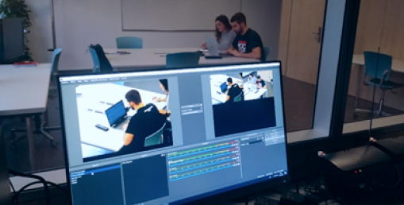

ikDAS
Rediseño de plataforma industrial
2018-19, 8 meses, individual
En esta nueva etapa de la transformación digital, las empresas industriales se han visto en la necesidad de crear nuevas interfaces humano-máquina (HMI) adaptadas a las necesidades de los usuarios. En este contexto, se ha llevado a cabo el proceso de diseño de la aplicación ikDAS de la empresa IK4-Ideko hasta crear un prototipo funcional, desde la perspectiva del diseño centrado en el usuario.
Análisis
Para comenzar con la fase de análisis, se ha llevado a cabo el análisis de la máquina y el HMI.
ikDAS es una plataforma portátil de adquisición y procesamiento de señales que mide y analiza el comportamiento dinámico de la máquina-herramienta con el objetivo de controlar las vibraciones y mejorar la eficiencia de los equipos. No exige amplios conocimientos para su utilización.
Evaluación experta
Se ha llevado a cabo la evaluación de la interacción de la actual plataforma, desde la perspectiva del diseñador, evaluando los criterios definidos por heurísticos de usabilidad. Entre los aspectos generales, setup y diagnóstico que se han analizado en el actual software ikDAS, 89 en total, se han identificado 25 aspectos a mejorar.

Evaluación del usuario
Se han ejecutado testeos con usuarios en un espacio acondicionado para llevar a la práctica el diseño centrado en el usuario, un laboratorio con dos espacios independientes con estructura de cámara Gesell. Cada usuario ha debido ejecutar una serie de tareas, definidas por parte del experto del sistema a evaluar. Durante la ejecución de tareas se han observado las acciones de los usuarios con dispositivos eye-tracking para identificar factores críticos. Han sido 16 participantes en total, entre las que se encuentran 10 estudiantes de Ingeniería Mecánica y 6 operarios de Ideko.
Conceptualización
Con los insights recibidos a través de los testeos y teniendo en cuenta los aspéctos críticos a mejorar, se ha comenzado con el diseño visual de la nueva plataforma por wireframes de baja y alta fidelidad, lo que ha permitido identificar problemas que pueden presentarse en el desarrollo de la aplicación.
Diseño final
Finalmente, tras definir las especificaciones gráficas a las que deberá ceñirse la nueva aplicación, basándose en los wireframes realizados y teniendo en cuenta los resultados de las evaluaciones de usabilidad de ikDAS, se han podido diseñar las pantallas de la propuesta visual sin código de ikDAS2.
¿Hablamos?
Si te gusta lo que ves, no dudes en ponerte en contacto conmigo.
Me encantaría conocerte.